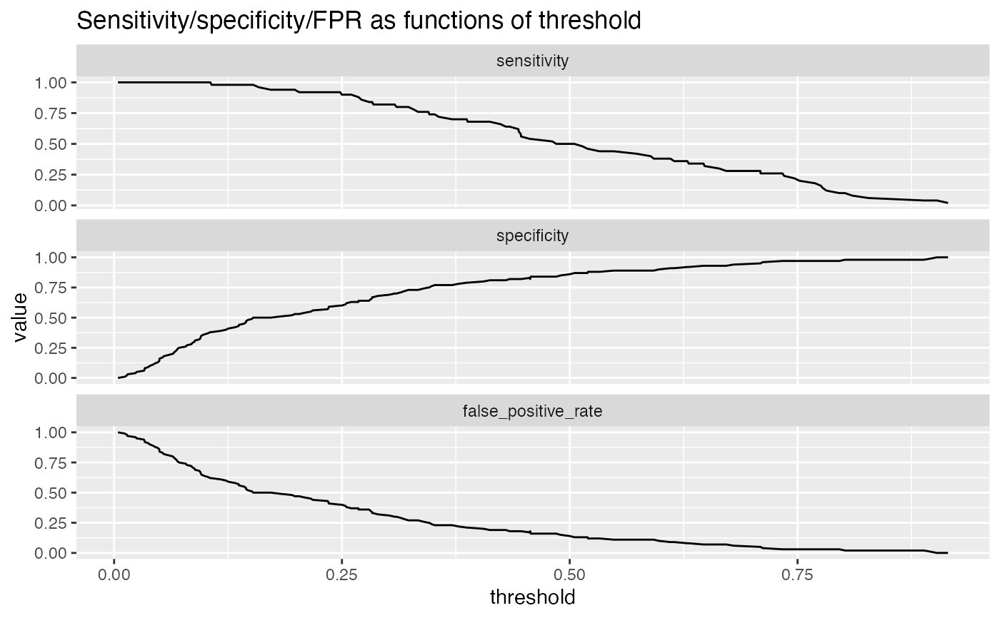

R/PRTPlot.R
PRTPlot.RdPlot classifier performance metrics as a function of threshold.
data frame to get values from
name of the column of predicted scores
name of the column of actual outcomes in frame
value we consider to be positive
title to place on plot
no unnamed argument, added to force named binding of later arguments.
variables to plot, must be at least one of the measures listed below. Defaults to c("precision", "recall")
range of thresholds to plot.
line color for the plot
For a classifier, the precision is what fraction of predicted positives are true positives; the recall is what fraction of true positives the classifier finds, and the enrichment is the ratio of classifier precision to the average rate of positives. Plotting precision-recall or enrichment-recall as a function of classifier score helps identify a score threshold that achieves an acceptable tradeoff between precision and recall, or enrichment and recall.
In addition to precision/recall, PRTPlot can plot a number of other metrics:
precision: fraction of predicted positives that are true positives
recall: fraction of true positives that were predicted to be true
enrichment: ratio of classifier precision to prevalence of positive class
sensitivity: the same as recall (also known as the true positive rate)
specificity: fraction of true negatives to all negatives (or 1 - false_positive_rate)
false_positive_rate: fraction of negatives predicted to be true over all negatives
For example, plotting sensitivity/false_positive_rate as functions of threshold will "unroll" an ROC Plot.
Plots are in a single column, in the order specified by plotvars.
df <- iris
df$isVersicolor <- with(df, Species=='versicolor')
model = glm(isVersicolor ~ Petal.Length + Petal.Width + Sepal.Length + Sepal.Width,
data=df, family=binomial)
df$pred = predict(model, newdata=df, type="response")
WVPlots::PRTPlot(df, "pred", "isVersicolor", TRUE, title="Example Precision-Recall threshold plot")
WVPlots::PRTPlot(df, "pred", "isVersicolor", TRUE,
plotvars = c("sensitivity", "specificity", "false_positive_rate"),
title="Sensitivity/specificity/FPR as functions of threshold")
